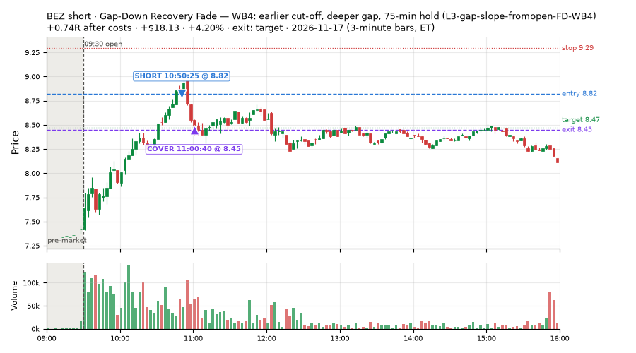
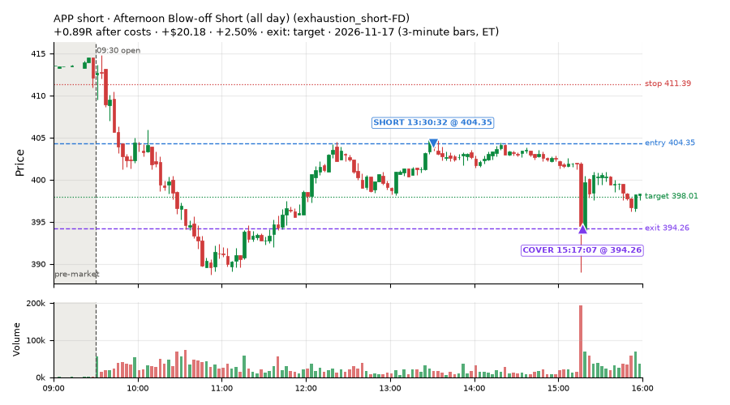
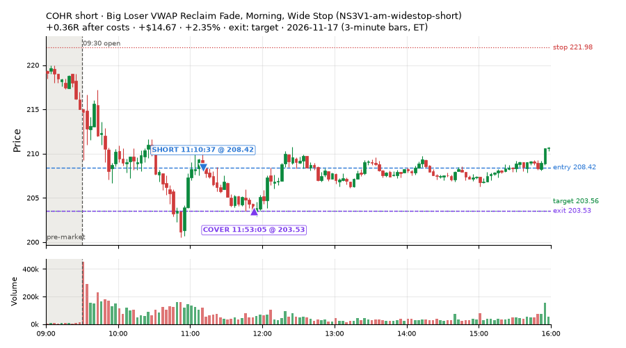
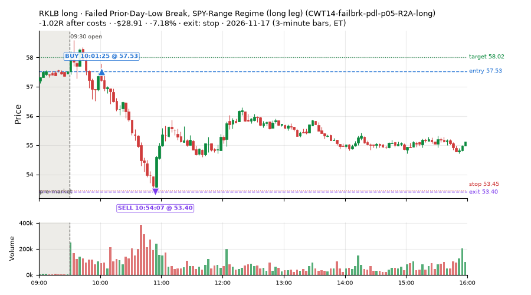
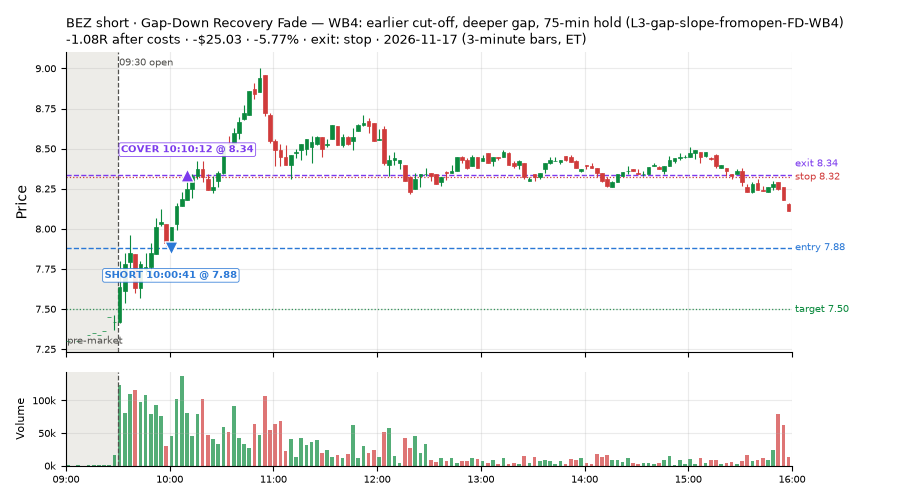
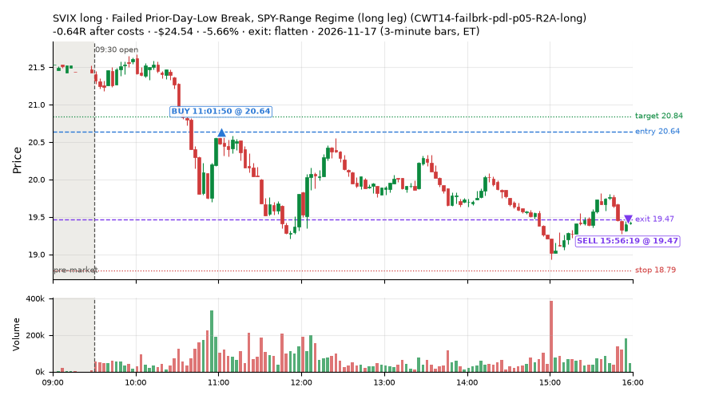
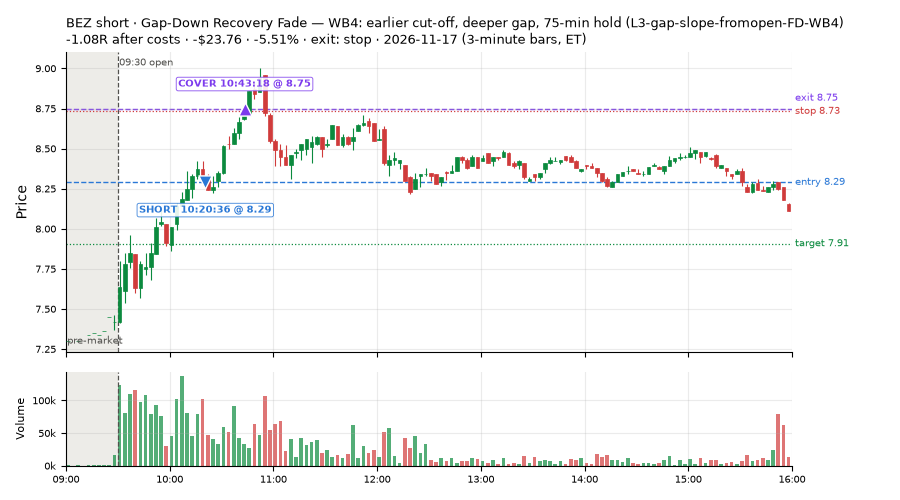
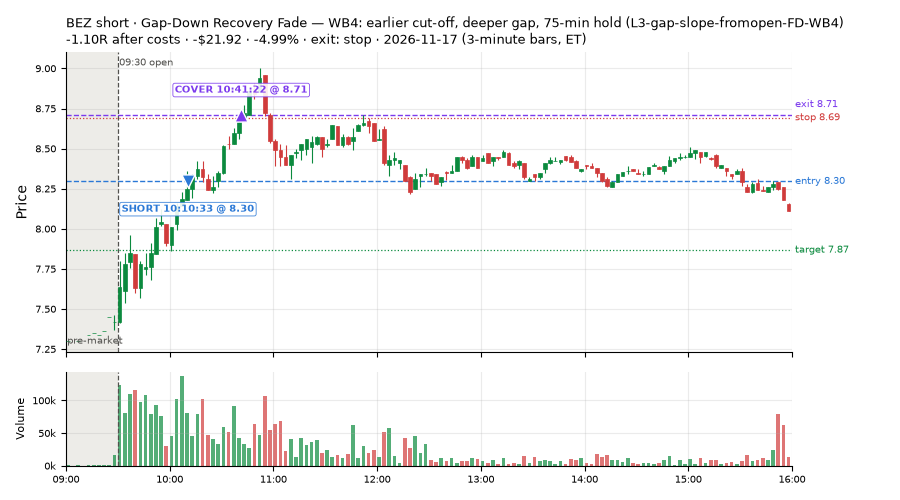

308 trades · win rate 53% · P/L $-422.43
PROBATION: no live setup has passed both locked test periods. 10 owner-directed setups added 2026-10-08 (MarcoFlow top 5 + 5 new), untested live. RW6G1 (RW6 + VWAP band guard) added 2026-10-09, probation.

| Symbol | Setup | Side | In | Out | Entry | Exit | Exit reason | % gained | P/L |
|---|---|---|---|---|---|---|---|---|---|
| BEZ | Gap-Down Recovery Fade — WB4: earlier cut-off, deeper gap, 75-min hold (L3-gap-slope-fromopen-FD-WB4) | short | 10:50 | 11:00 | 8.82 | 8.45 | target | +4.20% | $18.13 |
| APP | Afternoon Blow-off Short (all day) (exhaustion_short-FD) | short | 13:30 | 15:17 | 404.35 | 394.26 | target | +2.50% | $20.18 |
| COHR | Big Loser VWAP Reclaim Fade, Morning, Wide Stop (NS3V1-am-widestop-short) | short | 11:10 | 11:53 | 208.42 | 203.53 | target | +2.35% | $14.67 |
| Symbol | Setup | Side | In | Out | Entry | Exit | Exit reason | % lost | P/L |
|---|---|---|---|---|---|---|---|---|---|
| RKLB | CWT14-failbrk-pdl-p05-R2A-long | long | 10:01 | 10:54 | 57.53 | 53.40 | stop | -7.18% | $-28.91 |
| BEZ | L3-gap-slope-fromopen-FD-WB4 | short | 10:00 | 10:10 | 7.88 | 8.34 | stop | -5.77% | $-25.03 |
| SVIX | CWT14-failbrk-pdl-p05-R2A-long | long | 11:01 | 15:56 | 20.64 | 19.47 | flatten | -5.66% | $-24.54 |
| BEZ | L3-gap-slope-fromopen-FD-WB4 | short | 10:20 | 10:43 | 8.29 | 8.75 | stop | -5.51% | $-23.76 |
| BEZ | L3-gap-slope-fromopen-FD-WB4 | short | 10:10 | 10:41 | 8.30 | 8.71 | stop | -4.99% | $-21.92 |








Signal to fill: median 2s, 90th percentile 4s (307 trades). Bars close each minute; the order follows the bar close.
Best excursion (MFE): median 0.23R; worst (MAE) median 0.46R. 56% of trades never got +0.25R in our favour; 3 reached +1R and still closed at or below 0.
| Symbol | Setup | Best R | Worst R | Closed R |
|---|---|---|---|---|
| EWT | MF2-open-rsimidhi-flowsell-FD-WB3 | +9.80 | -4.63 | -3.50 |
| AVGO | MF2-open-rsimidhi-flowsell-FD-WB3 | +2.47 | -2.71 | -1.38 |
| OKLO | MF2-open-rsimidhi-flowsell-FD-WB3 | +0.24 | -1.98 | -2.07 |
| PAYX | CWT14-failbrk-pdl-p10-long | +1.05 | -1.12 | -1.23 |
| VIG | CWT14-failbrk-pdl-p10-long | +0.48 | -1.13 | -1.28 |
| Entry time | Trades | Win | Avg R | P/L |
|---|---|---|---|---|
| 09:50-10:30 | 73 | 30% | -0.40 | $-350.66 |
| 10:30-11:30 | 152 | 69% | -0.02 | $-13.54 |
| 11:30-13:00 | 49 | 45% | -0.31 | $-51.87 |
| 13:00-14:00 | 16 | 50% | -0.09 | $11.65 |
| 14:00-16:00 | 18 | 39% | -0.16 | $-18.01 |
| Setup | Trades | Win | Avg R after costs | Adj R (net of SPY) | Avg R ex-market (all sessions) | P/L |
|---|---|---|---|---|---|---|
| Stretched Below VWAP Bounce (CWT13-vwapstretch-z05-long) | 44.0 | 86% | +0.12 | -0.01 | +0.00 (beta +1.43, n 321) | $21.11 |
| Failed Prior-Day-Low Break, SPY-Range Regime (long leg) (CWT14-failbrk-pdl-p05-R2A-long) | 111.0 | 49% | -0.16 | -0.12 | -0.02 (beta +0.43, n 313) | $-310.41 |
| Failed Prior-Day-Low Break Long (CWT14-failbrk-pdl-p10-long) | 83.0 | 46% | -0.39 | -0.16 | -0.10 (beta +1.09, n 809) | $-104.28 |
| Generated: Late Choppy Dip Buy (SPY down) (GEN-261023-08-RSIslopelem5p5-VWAPcrossesge8-SMA50dlem1p7-LATE-SPYltm0p5-t1s1-long) | 3.0 | 33% | -0.24 | -0.25 | -0.23 (beta +0.90, n 5) | $-3.66 |
| Generated: PM Upper-Band Fade (weak mkt) (GEN-261026-07-Flow3ge0p56-BBpctge0p98-ADX7le34-PM-BRvwlt0p3-holdtr-short) | 7.0 | 43% | -0.16 | -0.16 | -0.12 (beta -0.80, n 57) | $-13.92 |
| Generated: Midday Spike Fade (SPY down) (GEN-261028-07-Z12ge1p6-Eff6le0p034-MID-SPYltm0p25-hold-short) | 3.0 | 33% | +0.39 | +0.48 | +0.04 (beta -0.64, n 7) | $4.35 |
| Gap-Down Recovery Fade — WB4: earlier cut-off, deeper gap, 75-min hold (L3-gap-slope-fromopen-FD-WB4) | 8.0 | 50% | -0.33 | -0.38 | -0.04 (beta +1.47, n 8) | $-51.84 |
| Early Sellers, Mid-High RSI (all day) — WB3: skip rising 20-SMA / gap-ups > 2% + RSI 55-62 + heat -40..-30 + ADV $150M (MF2-open-rsimidhi-flowsell-FD-WB3) | 20.0 | 15% | -0.84 | -0.84 | -0.67 (beta -2.11, n 20) | $-56.68 |
| Early Sellers, Strong Heat (MF4-h40-open-flowsell) owner-directed; holdouts once: Sep-Oct -0.117R n147, Apr-Jun -0.017R n735 | 3.0 | 67% | -0.09 | -0.10 | -0.39 (beta -0.79, n 12) | $-0.58 |
| Sellers into Strength (all day) (MF5-flowsell-vwapup-rsi5hi) owner-directed; holdouts once: Sep-Oct -0.001R n264, Apr-Jun -0.010R n1199 | 5.0 | 100% | +0.76 | +0.19 | +0.11 (beta -0.62, n 53) | $14.68 |
| Gap-Down Capitulation Buy (near-miss) (NM-AR-AM-gapdown-capitulation-long) | 4.0 | 100% | +1.04 | +0.26 | -0.28 (beta +0.89, n 74) | $18.68 |
| Early Sellers into a Pop (index down, no gap up) (near-miss) (NM-MF3-qqqdn-gapdn-FD) | 3.0 | 67% | +0.41 | -0.22 | -0.07 (beta -1.15, n 47) | $5.03 |
| Big Loser VWAP Reclaim Fade, Morning, Wide Stop (NS3V1-am-widestop-short) | 3.0 | 33% | -0.08 | -0.14 | -0.23 (beta -0.17, n 60) | $2.43 |
| Afternoon Blow-off Short (all day) (exhaustion_short-FD) | 11.0 | 73% | +0.40 | +0.24 | -0.05 (beta -0.72, n 132) | $52.66 |
Market direction (SPY, beta 1) accounted for $-131.71 of today's $-422.43; the rest ($-290.72) came from the setups themselves. Avg R net of SPY: -0.14 (incl. a hedge leg's cost; report only).
25 setups live today. Today: 651 signals, 308 taken, 11 lost because another setup held the symbol (2%). Since 2026-10-12 (27 sessions): 11694 signals, 5872 taken, 801 lost to other setups (7%). Peak open positions today 147 of 800 slots. Earnings blackout removed 329 symbols before scanning.
Simulated playing time (not live): 5803 what-if trades of signals not taken, avg -0.07R, 58% winners; of them 801 lost to another setup (avg -0.18R).
Silent: LD4-st4-breadthup-t1s05-long, LD8-spy-dip030-breadthturn-spxl-holdtr-long, LD1-ns1-breadthup-t05s1-long, CWT04-backside-lh-a25-short, CWT04-backside-vwaptest-a25-short · Crowded out: NS3-failed-vwap-reclaim-short-FD · Starved: exhaustion_short-FD, MF5-flowsell-vwapup-rsi5hi, NS5-sma50-flush-oversold-long-FD, RW4-ns3-adv150-short-FD, MF2-open-rsimidhi-flowsell
| Prio | Setup | Today sig / taken | Sessions | Signals / taken / trades | Taken/day | Expected/day | Lost to other setups | Lost to (setup n) | Top skip reasons | SIMULATED: not-taken n / avg R / win | Verdict |
|---|---|---|---|---|---|---|---|---|---|---|---|
| 1 | Gap-Down Recovery Fade — WB4: earlier cut-off, deeper gap, 75-min hold L3-gap-slope-fromopen-FD-WB4 | 51 / 8 | 1 | 51 / 8 / 8 | 8.00 | – | 6 | L3-gap-slope-fromopen-FD-WB4 6 | not shortable / shorts off 34, symbol held by another setup 6, spread / quote / size 3 | 43 / +0.33R / 70% | ok 40.0 entries/week |
| 2 | Early Sellers, Mid-High RSI (all day) — WB3: skip rising 20-SMA / gap-ups > 2% + RSI 55-62 + heat -40..-30 + ADV $150M MF2-open-rsimidhi-flowsell-FD-WB3 | 35 / 20 | 1 | 35 / 20 / 20 | 20.00 | – | 1 | CWT14-failbrk-pdl-p05-R2A-long 1, CWT14-failbrk-pdl-p10-long 1 | spread / quote / size 6, other 5, broker rejected 2 | 15 / -0.63R / 20% | ok 100.0 entries/week |
| 3 | Big Gainer Fade, VWAP Band Guard (all day) — WB3: from 11:00, stretched reclaim, liquid, no gap-up runners RW6G1-ns2-up3-vwap2sd-short-FD-WB3 | 3 / 0 | 1 | 3 / 0 / 0 | 0.00 | – | 0 | – | not shortable / shorts off 3 | 3 / +0.08R / 67% | slow no entries yet |
| 4 | Generated: Late Down-Stock Turn Buy (SPY up) GEN-261028-01-MACDhge0p12-Since950ATRlem0p25-LATE-SPYgt0p5-holdtr-long | 0 / 0 | 2 | 0 / 0 / 0 | 0.00 | – | 0 | – | – | 0 / – | quiet - wait no signals in 2 session(s); too early to tell |
| 5 | Generated: Midday Spike Fade (SPY down) GEN-261028-07-Z12ge1p6-Eff6le0p034-MID-SPYltm0p25-hold-short | 6 / 3 | 2 | 12 / 7 / 7 | 3.50 | – | 0 | – | other 3, spread / quote / size 2 | 5 / +0.58R / 60% | ok 17.5 entries/week |
| 6 | Generated: Late Choppy Dip Buy (SPY down) GEN-261023-08-RSIslopelem5p5-VWAPcrossesge8-SMA50dlem1p7-LATE-SPYltm0p5-t1s1-long | 3 / 3 | 2 | 7 / 5 / 5 | 2.50 | – | 0 | – | price through stop/target 2 | 2 / +0.02R / 50% | slow 12.5 entries/week; ~5 weeks to 60 trades |
| 7 | Generated: Lunch Selling-Flush Buy (extended) GEN-261027-10-FlowShiftlem1p2-MACDhge0p079-SMA20dge0p59-LUNCH-BRopgt0p65-holdtr-long | 0 / 0 | 2 | 0 / 0 / 0 | 0.00 | – | 0 | – | – | 0 / – | quiet - wait no signals in 2 session(s); too early to tell |
| 8 | Generated: PM Upper-Band Fade (weak mkt) GEN-261026-07-Flow3ge0p56-BBpctge0p98-ADX7le34-PM-BRvwlt0p3-holdtr-short | 21 / 7 | 2 | 123 / 57 / 57 | 28.50 | – | 6 | CWT14-failbrk-pdl-p10-long 3, CWT14-failbrk-pdl-p05-R2A-long 2, NM-AR-AM-gapdown-capitulation-long 1 | per-setup cap 26, other 20, spread / quote / size 8 | 66 / +0.19R / 64% | ok 142.5 entries/week |
| 9 | Generated: Open Failed-Breakdown Short GEN-261026-04-ORBfailDn-Ret15mlem0p55-SMA50dlem0p3-OPEN-BRvwgt0p5-holdtr-short | 0 / 0 | 2 | 0 / 0 / 0 | 0.00 | – | 0 | – | – | 0 / – | quiet - wait no signals in 2 session(s); too early to tell |
| 10 | Generated: Open Tight-Range Sell-Off Buy GEN-261020-08-FlowShiftlem0p41-Compress6le0p077-OPEN-QQQup-t05s05-long | 0 / 0 | 2 | 0 / 0 / 0 | 0.00 | – | 0 | – | – | 0 / – | quiet - wait no signals in 2 session(s); too early to tell |
| 11 | Generated: Lunch Quiet Breakout Buy (SPY up) GEN-261029-04-Ret15mge0p54-RVolDayle0p59-VWAPcrossesle1-LUNCH-SPYgt0p25-hold-long | 0 / 0 | 2 | 0 / 0 / 0 | 0.00 | – | 0 | – | – | 0 / – | quiet - wait no signals in 2 session(s); too early to tell |
| 12 | Generated: Open VWAP Reclaim Buy (down stock) GEN-261019-01-VWAPxUp-ATRdge3p6-FromPCATRlem0p68-OPEN-BRvwgt0p7-t05s05-long | 0 / 0 | 2 | 0 / 0 / 0 | 0.00 | – | 0 | – | – | 0 / – | quiet - wait no signals in 2 session(s); too early to tell |
| 13 | Failed Prior-Day-Low Break, SPY-Range Regime (long leg) CWT14-failbrk-pdl-p05-R2A-long | 199 / 111 | 12 | 500 / 313 / 313 | 26.08 | – | 8 | RW3S-gapdn-flowsell-short-FD 6, MF4-h40-open-flowsell 1, GEN-261026-07-Flow3ge0p56-BBpctge0p98-ADX7le34-PM-BRvwlt0p3-holdtr-short 1 | spread / quote / size 179, symbol held by another setup 8 | 186 / -0.10R / 57% | ok 130.4 entries/week |
| 14 | Failed Prior-Day-Low Break, SPY-Range Regime (short leg) CWT14-failbrk-pdl-p05-R2A-short | 0 / 0 | 12 | 318 / 138 / 138 | 11.50 | – | 68 | CWT14-failbrk-pdl-p10-long 68, CWT14-failbrk-pdl-p10-lowvol-long 8 | spread / quote / size 103, symbol held by another setup 68, not shortable / shorts off 9 | 178 / -0.00R / 65% | ok 57.5 entries/week |
| 15 | Generated: Morning Upper-Wick Short (falling) GEN-261026-01-UpWickge0p59-Since950ATRlem0p61-AM-BRopgt0p5-holdtr-short | 0 / 0 | 2 | 0 / 0 / 0 | 0.00 | – | 0 | – | – | 0 / – | quiet - wait no signals in 2 session(s); too early to tell |
| 16 | Generated: Lunch Choppy RSI Turn Buy GEN-261023-07-RSIslopege9p1-BarRngATRge0p087-VWAPcrossesge8-LUNCH-BRvwgt0p7-hold-long | 0 / 0 | 2 | 0 / 0 / 0 | 0.00 | – | 0 | – | – | 0 / – | quiet - wait no signals in 2 session(s); too early to tell |
| 17 | Stretched Above VWAP Fade (far) CWT13-vwapstretch-z075-short | 0 / 0 | 27 | 46 / 25 / 25 | 0.93 | – | 0 | – | not shortable / shorts off 10, daily loss cap 4, spread / quote / size 3 | 21 / -0.47R / 29% | slow 4.6 entries/week; ~13 weeks to 60 trades |
| 18 | Early Sellers into a Pop (index down, no gap up) (near-miss) NM-MF3-qqqdn-gapdn-FD | 9 / 3 | 20 | 85 / 47 / 47 | 2.35 | 4.90 | 5 | NM-AR-AM-gapdown-capitulation-long 5, CWT13-vwapstretch-z05-long 1 | spread / quote / size 14, not shortable / shorts off 12, other 7 | 38 / +0.34R / 68% | slow 11.8 entries/week; ~5 weeks to 60 trades |
| 19 | Early Sellers, Strong Heat MF4-h40-open-flowsell | 10 / 3 | 5 | 51 / 12 / 12 | 2.40 | 7.24 | 0 | – | spread / quote / size 31, not shortable / shorts off 6, other 2 | 39 / -0.39R / 41% | slow 12.0 entries/week; ~5 weeks to 60 trades |
| 20 | Big Loser VWAP Reclaim Fade, Morning, Wide Stop NS3V1-am-widestop-short | 6 / 3 | 18 | 132 / 60 / 60 | 3.33 | 5.30 | 3 | NS3V1-am-widestop-short 3, NM-RWR3-ns3-qqqup-early-short 1, NM-RWN3-ns3-spyup-early-short 1 | spread / quote / size 37, not shortable / shorts off 32, symbol held by another setup 3 | 72 / -0.02R / 61% | ok 16.7 entries/week |
| 21 | Gap-Down Capitulation Buy (near-miss) NM-AR-AM-gapdown-capitulation-long | 4 / 4 | 22 | 119 / 74 / 74 | 3.36 | – | 3 | MF4-h40-open-flowsell 2, CWT14-failbrk-pdl-p05-R2A-short 1 | spread / quote / size 37, other 5, symbol held by another setup 3 | 45 / -0.14R / 44% | ok 16.8 entries/week |
| 22 | Stretched Below VWAP Bounce CWT13-vwapstretch-z05-long | 74 / 44 | 26 | 630 / 321 / 321 | 12.35 | – | 3 | CWT14-failbrk-pdh-p05-lowvol-short 1, CWT09-gapdn-vwaploss-g10-short 1, CWT09-gapdn-bounce-g10-lowerhalf-short 1 | daily loss cap 152, other 84, spread / quote / size 67 | 308 / -0.07R / 62% | ok 61.7 entries/week |
| 23 | Afternoon Blow-off Short (all day) exhaustion_short-FD | 30 / 11 | 20 | 234 / 132 / 132 | 6.60 | 64.64 | 4 | CWT12-coil-k4-long 3, CWT14-failbrk-pdl-p05-R2A-long 1 | not shortable / shorts off 54, spread / quote / size 29, other 15 | 102 / -0.10R / 46% | starved 6.60 entries/day vs ~64.64 expected |
| 24 | Failed Prior-Day-Low Break Long CWT14-failbrk-pdl-p10-long | 192 / 83 | 27 | 1429 / 809 / 809 | 29.96 | – | 33 | CWT14-failbrk-pdl-p10-lowvol-long 15, CWT14-failbrk-pdl-p05-R2A-short 6, CWT14-failbrk-pdl-p05-lowvol-long 4 | spread / quote / size 384, other 153, symbol held by another setup 33 | 616 / -0.07R / 63% | ok 149.8 entries/week |
| 25 | Sellers into Strength (all day) MF5-flowsell-vwapup-rsi5hi | 8 / 5 | 20 | 109 / 53 / 53 | 2.65 | 15.47 | 22 | MF5-flowsell-vwapup-rsi5hi-FD 19, NM-AR-AM-gapdown-capitulation-long 1, CWT14-failbrk-pdl-p05-R2A-long 1 | symbol held by another setup 22, other 18, spread / quote / size 13 | 56 / +0.08R / 55% | starved 2.65 entries/day vs ~15.47 expected |
Every trade is attached as a CSV you can open and edit in Excel or Google Sheets. Live page: https://misiti15.github.io/MCF/live/